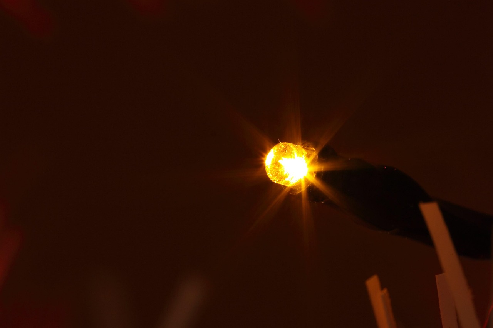
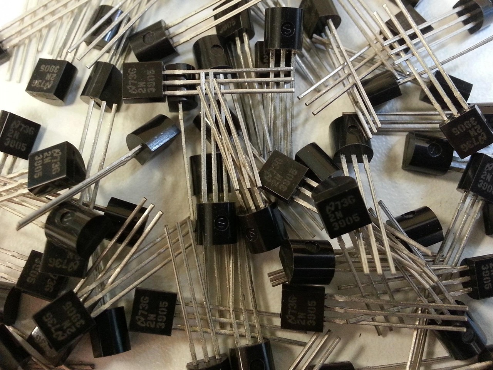

Diodos: Deixam a corrente passar em apenas uma direção e têm um comportamento exponencial na relação entre tensão e corrente. Quando a tensão é aplicada no sentido direto o diodo conduz corrente; quando a tensão é aplicada no sentido reverso, ele bloqueia a passagem da corrente.

Transistores: Usados como amplificadores ou chaves eletrônicas, não possuem uma relação linear entre tensão e corrente. Ele funciona controlando o fluxo de corrente entre dois terminais a partir de uma pequena corrente ou tensão aplicada ao terceiro terminal.

Lâmpadas incandescentes: O filamento esquenta e sua resistência aumenta conforme a corrente passa. De forma mais técnica, quando a corrente elétrica passa pelo filamento, a resistência do material transforma a energia elétrica em calor, elevando a temperatura a ponto de emitir luz.
Supercondutores: Abaixo de uma temperatura crítica, sua resistência cai para zero. Dessa forma, a corrente elétrica pode fluir indefinidamente por um fio supercondutor sem perda de energia. Apesar da condição específica de resfriamento, os supercondutores se mostram como uma tecnologia extremamente eficiente.